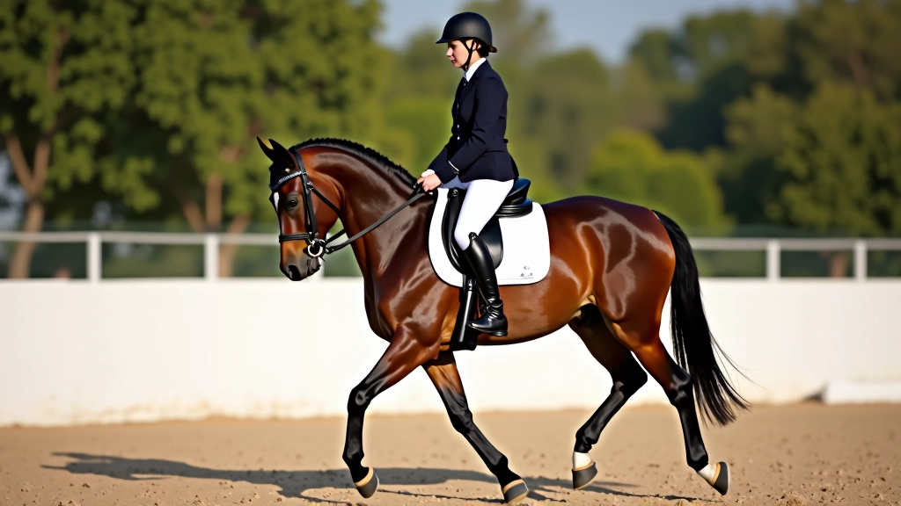
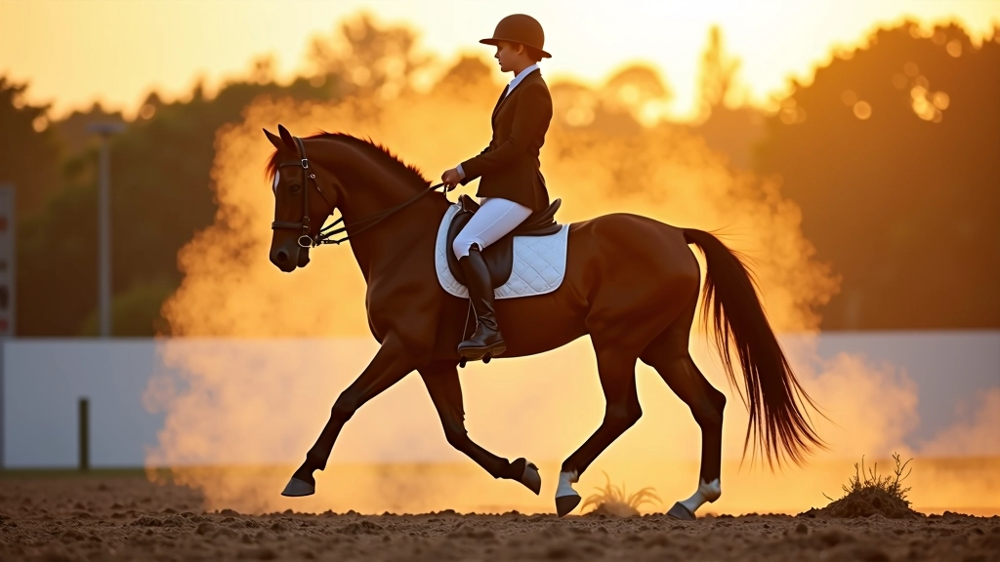
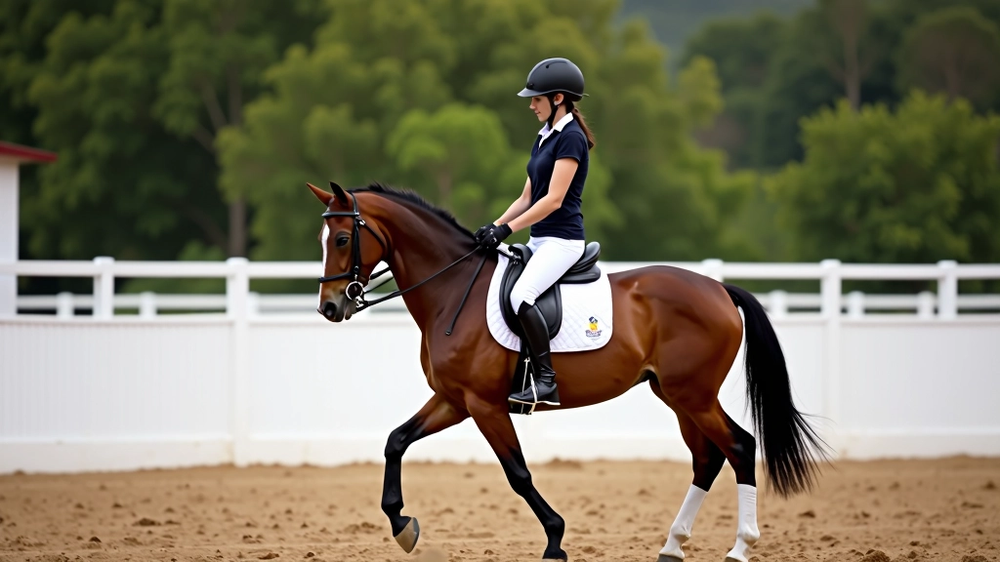

أساسيات الجلسة الصحيحة والتوازن على الحصان
الطريقة الصحيحة للجلوس على الحصان هي أساس كل شيء في الفروسية. تعرّف على كيفية وضع جسدك، توازن حوضك، وموضع ساقيك للحصول على أداء أفضل وأكثر أماناً.

لماذا الجلسة الصحيحة مهمة جداً؟
الجلسة ليست مجرد موضع جسدي — إنها التواصل المباشر بينك وبين حصانك. عندما تجلس بشكل صحيح، تستطيع التحكم بشكل أفضل، والحصان يشعر بثقتك واستقراريتك. هذا يعني حركات أنعم، أداء أفضل، وتدريب أكثر فعالية.
الكثير من الفرسان يبدأون بأخطاء في الجلسة — ظهر مائل، حوض متوتر، أو أرجل في الموضع الخاطئ. لكن الخبر الجيد؟ يمكنك تصحيح ذلك. مع التركيز والممارسة المنتظمة، ستصبح الجلسة الصحيحة طبيعية تماماً.
الجلسة الجيدة تبدأ من التوازن. إذا كنت متوازناً، يكون كل شيء آخر أسهل.

عناصر الجلسة الصحيحة
محاذاة الجسم
تخيل خطاً مستقيماً يمر من أذنك، عبر كتفك، وصولاً إلى كعبك. هذا هو الخط المثالي. ظهرك يجب أن يكون مستقيماً لكن مرناً — ليس متيبساً أو منحنياً للأمام.
موضع الحوض
الحوض هو مركز التوازن. يجب أن يكون محايداً — ليس مائلاً للأمام ولا للخلف. تخيل كأس ماء في حوضك. إذا كنت تميل للأمام أو الخلف، سوف تنسكب.
وضع الساقين
ساقاك يجب أن تكون أسفل جسمك مباشرة. الكعب منخفض والقدم مسترخية. الركبة مثنية قليلاً — حوالي 25-30 درجة. هذا يعطيك استقراراً والقدرة على التحرك مع الحصان.
موضع اليدين والذراعين
ذراعاك تكون على امتداد مستقيم من مرفقك إلى فم الحصان. المرفقان قريبان من جسمك، والكتفان مرتاحان. اليد تتحرك مع عنق الحصان، ليست ثابتة.
اتجاه النظر
لا تنظر لأسفل! انظر للأمام في اتجاه السير. رأسك محايد ومرتفع. هذا يساعدك على الحفاظ على التوازن ويمنع كتفاك من الانحناء للأمام.
الاسترخاء والثبات
هذا هو السر الحقيقي. تحتاج إلى أن تكون مستقراً لكن مسترخياً. التوتر ينتقل مباشرة للحصان. خذ نفساً عميقاً، أرخِ كتفيك، واشعر بالاتصال بين جسمك والحصان.
التوازن: أساس كل شيء
التوازن ليس أمراً تتعلمه مرة واحدة. إنه شيء تعمل عليه في كل جلسة تدريب. عندما تكون متوازناً، تشعر بثقل جسمك موزعاً بالتساوي على كلا جانبي الحصان. لا تشعر بالسقوط للأمام أو للخلف أو لأحد الجانبين.
هناك ثلاث نقاط تلامس رئيسية تساعدك على البقاء متوازناً: مقعدك، فخذاك، وكاحلاك. عندما تشعر بهذه النقاط الثلاث بقوة متساوية، أنت في الموضع الصحيح. جرّب هذا: أغمض عينيك للحظة وشعر بأين تضغط. إذا كان الضغط أكثر على جانب واحد، فأنت تميل.
استشعر ثقل جسمك من الأسفل للأعلى
حقق التوازن من خلال المقعد والفخذ والكاحل
تحرك مع الحصان بسلاسة، لا تحاول مقاومة الحركة
راقب تحسنك أسبوع بأسبوع

تمارين عملية للجلسة والتوازن
النظرية مهمة، لكن الممارسة هي كل شيء. إليك تمارين محددة يمكنك تطبيقها في كل جلسة تدريب.
تمرين الركوب بدون ركاب
ابدأ برحلة سهلة بدون استخدام السرج أو استخدم سرج مسطح فقط. هذا يجبرك على الاعتماد على توازنك الحقيقي. ستشعر مباشرة بأي عدم توازن. ابدأ بـ 5 دقائق فقط وزيادة المدة تدريجياً.
تمرين التوازن الثابت
قف مع حصانك بسرعة ثابتة جداً (الخطو البطيء). ركز على شعورك بنقاط التلامس الثلاث. لا تحاول "القيام" بأي شيء. فقط اجلس واشعر. هذا يعلمك الاستقرار الحقيقي.
تمرين الأذرع المرتفعة
ارفع ذراعيك للجانبين (في مستوى الكتفين) وأنت تركب بخطو ثابت. هذا يزيل دعم اليدين ويجبرك على الاعتماد على التوازن الأساسي. استمر لمدة دقيقة واحدة، ثم كرر 3 مرات.
تمرين دوائر صغيرة
ارسم دوائر صغيرة بالحصان (قطر 5-7 أمتار) بخطو ثابت. هذا يختبر قدرتك على الحفاظ على التوازن عند تغيير الاتجاه. إذا شعرت بنفسك تميل، أبطئ السرعة وركز.
تمرين الإحماء الثابت
في بداية كل جلسة، اقضِ 5-10 دقائق تركب ببطء جداً وتركز على جودة الجلسة وليس السرعة. هذا يعد جسمك وعقلك للتمارين الأصعب التي تليها.
تمرين المرآة والملاحظة
إذا أمكنك، ركب بجانب مرآة كبيرة أو اطلب من شخص آخر أن يراقبك. البصر الخارجي يساعدك على اكتشاف الأخطاء التي لا تشعر بها. حتى ركوب واحد بجانب المرآة يمكن أن يحسّن وعيك بجسمك.
الأخطاء الشائعة وكيفية تصحيحها
كل فارس يرتكب هذه الأخطاء في البداية. المهم هو التعرف عليها وتصحيحها. إليك الأخطاء الأكثر شيوعاً والحلول:
الخطأ: النظر للأسفل
عندما تنظر للأسفل، تميل رأسك وكتفاك للأمام. هذا يؤثر على توازنك كله. الحل: اختر نقطة في المسافة وانظر إليها. حتى لو لم تكن بحاجة لرؤيتها، تخيل أن هناك شيئاً تريد رؤيته.
الخطأ: الظهر المقوس أو المنحني
بعض الفرسان ينحنون للأمام أو يقوسون ظهرهم للخلف. كلاهما يؤثر على توازنك وراحة الحصان. الحل: تخيل خيطاً يسحبك من أعلى رأسك. هذا يساعدك على البقاء مستقيماً بشكل طبيعي.
الخطأ: أرجل متمايلة أو قدم معلقة
إذا كانت أرجلك متمايلة أو قدمك معلقة، فأنت لا تحصل على الثبات الذي تحتاجه. الحل: ركز على وضع كاحليك تحت الجسم مباشرة. الكعب منخفض قليلاً، والقدم مسترخية.
الخطأ: التوتر والجسم الصلب
التوتر الزائد يجعلك متيبساً وغير مرن. الحصان يشعر بذلك ويصبح متوتراً أيضاً. الحل: أخذ نفساً عميقاً، أرخِ كتفيك، اشعر بنفسك تتحرك مع الحصان. الثبات لا يعني الصلابة.
الخطأ: اليدين الثقيلة أو المتيبسة
إذا كانت يداك ثقيلة جداً أو متيبسة، فأنت تسحب فم الحصان بدلاً من التواصل معه. الحل: اترك يديك تتحركان مع عنق الحصان. الاتصال يجب أن يكون خفيفاً وحساساً.

ملاحظة مهمة
هذا الدليل يقدم معلومات تعليمية عامة عن تقنيات الجلسة والتوازن في الفروسية. كل فارس فريد، وكل حصان فريد. قد تختلف التقنيات الفعلية حسب أسلوبك الشخصي والحصان الذي تركبه. نوصي بشدة بالعمل مع مدرب متخصص يمكنه تقديم ملاحظات شخصية مباشرة. الممارسة الآمنة والمستمرة هي المفتاح لتحسين جلستك.
الخطوة التالية
تحسين جلستك وتوازنك ليس حدثاً واحداً — إنه عملية مستمرة. كل جلسة تدريب هي فرصة للتعلم والتحسن. ابدأ بالأساسيات، كن صبوراً مع نفسك، واستمتع بالرحلة.
تذكر: الفرسان الأفضل في العالم بدأوا بنفس الأسئلة التي تطرحها أنت الآن. لا توجد "مرة واحدة وانتهى الأمر" في الفروسية. هناك دائماً شيء جديد لتتعلمه، وتحسن آخر يمكنك إحرازه. اركب برشاقة، ابق متوازناً، واستمتع!
هل تريد تعلم المزيد عن تقنيات الفروسية الأخرى؟
استكشف المزيد من التمارين
كاتب المقال
فرسان الحلبة فريق التحرير
فريق التحرير
كتبه فريق التحرير بفرسان الحلبة، متخصص في توفير إرشادات عملية وموثوقة عن تمارين الفروسية.
مقالات ذات صلة

تطوير خطوة الحصان من الخطو إلى الحركات العالية
تمارين عملية لتحسين جودة خطوات الحصان، زيادة الارتفاع والقوة، والوصول إلى حركات...

تمارين الأشكال الهندسية وتحسين المرونة الجانبية
استخدام الدوائر والمربعات والخطوط لتطوير مرونة الحصان الجانبية، التحكم الدقيق، و...

تمارين متقدمة: من البيرويت إلى الحركات المزدوجة
برنامج شامل للفرسان المتقدمين يغطي الحركات المعقدة مثل البيرويت والحركات المزدوج...